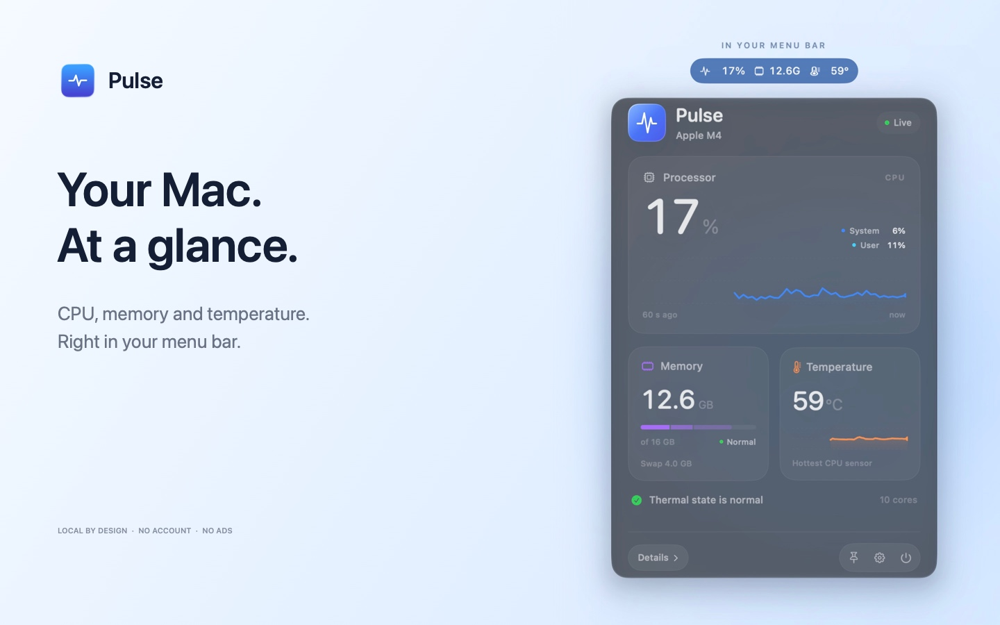

CPU, clearly.
See current load, its user and system breakdown, and a rolling 60-second history.
A little clarity for your Mac
CPU load, memory pressure and CPU temperature. A small presence in your menu bar, with more detail a click away.
App Store release in preparation
See current load, its user and system breakdown, and a rolling 60-second history.
Check memory pressure, available RAM, compressed memory and swap to understand what usage means.
Read the hottest available CPU sensor, with an optional chart and the thermal state reported by macOS.
Choose which metrics stay in the menu bar. Background sampling slows down, unselected memory and temperature readings are skipped, and monitoring pauses during sleep.
Pulse runs on your Mac, without accounts, ads, analytics or monitoring uploads. Recent history stays in memory. Read the privacy policy.
Requires macOS 13 or later. Optional native Liquid Glass is available on macOS 26 or later. English and Russian are supported. Temperature sensor availability depends on your Mac and macOS version; unavailable readings show a dash.